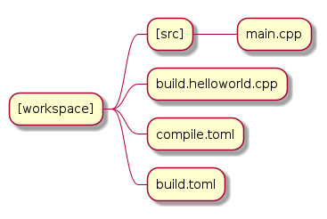

BuildExe “Script” example¶
Basic Procedure¶
Since we are writing our scripts in C++ we first need to compile our “script” to an executable, and then execute it to build targets.
![usecase "build.helloworld.cpp" as build_cpp
usecase "compile.toml" as compile_toml
usecase "host_toolchain.toml" as host_toolchain_toml
usecase "./build.helloworld" as build_project_exe
usecase "build.toml" as build_toml
rectangle "./buildexe" as buildexe_exe
artifact "./hello_world" as hello_world_exe
build_cpp -right-> buildexe_exe
compile_toml -up-> buildexe_exe
host_toolchain_toml -up-> buildexe_exe
buildexe_exe -right-> build_project_exe
build_toml -up-> build_project_exe
build_project_exe -right-> hello_world_exe](../_images/plantuml-a1e5d847249641c4133a5a1f48974c3d0a2657af.png)
Attention
Limitation of script mode
We need to compile our build “script” using a HOST toolchain. We cannot use a cross compiler here.
Helloworld “script” example¶
Write your C++ “script”
Write your
compile.tomlfileWrite your
build.tomlfile- Invoke
buildexefrom the command line from the [workspace] folder Pay attention to the
root_dirandbuild_dirparameters set in yourcompile.tomlandbuild.tomlfile.These directories are relative to the directory from which you invoke buildexe
- Invoke
./buildexe --config compile.toml --config $BUILDCC_HOME/host/host_toolchain.toml
Your target will now be present in
[build_dir]/[toolchain_name]/[target_name](taken frombuild.tomlandbuild.helloworld.cpp)
Directory structure¶

Write your C++ “script”¶
From the “script” below we can see that we have a few lines of boilerplate
Setup args
Setup register (pre and post callback requirements)
We then setup our main toolchain-target pairs. Highlighted below
- Specify your toolchain
Verify the toolchain existance on your machine by using the
.VerifyAPIIf multiple similar toolchains are detected (due to multiple installations), the first found toolchain is picked
You can pass in the
VerifyToolchainConfigto narrow down your search and verification.
- Specify your compatible target
Every specific target is meant to use a specific target.
For example:
ExecutableTarget_gccspecialized target can use theToolchain_gccspecialized toolchain but notToolchain_msvc.
- Use the Register
.BuildAPI. We use callbacks here to avoid cluttering ourint mainfunction. arg_gcc.statecontains ourbuildandtestvalues passed in frombuild.toml(see below). The.BuildAPI conditionally selects the target at run time.IMPORTANT Please do not forget to invoke the Target
.BuildAPI. This API registers the variousCompileCommandTasksandLinkCommandTasks.IMPORTANT In line with the above statement, Once the Target
.BuildAPI has been executed (tasks have been registered), do not attempt to add more information to the Targets. Internally the.BuildAPI locks the target from accepting further input and any attempt to do so willstd::terminateyour program (this is by design).
- Use the Register
1#include "buildcc.h"
2
3using namespace buildcc;
4
5void clean_cb();
6// All specialized targets derive from BaseTarget
7void hello_world_build_cb(BaseTarget & target);
8
9int main(int argc, char ** argv) {
10 // Step 1. Setup your args
11 Args args;
12 ArgToolchain arg_gcc;
13 args.AddToolchain("gcc", "GCC toolchain", arg_gcc);
14 args.Parse(argc, argv);
15
16 // Step 2. Register
17 Register reg(args);
18
19 // Step 3. Pre build steps
20 // for example. clean your environment
21 reg.Clean(clean_cb);
22
23 // Step 4. Build steps
24 // Main setup
25 Toolchain_gcc gcc;
26 auto verified_gcc_toolchains = gcc.Verify();
27 env::assert_fatal(!verified_gcc_toolchains.empty(), "GCC toolchain not found");
28
29 ExecutableTarget_gcc hello_world("hello_world", gcc, "");
30 reg.Build(arg_gcc.state, hello_world_build_cb, hello_world);
31
32 // Step 5. Build your targets
33 reg.RunBuild();
34
35 // Step 6. Post build steps
36 // for example. clang compile commands database
37 plugin::ClangCompileCommands({&hello_world}).Generate();
38
39 return 0;
40}
41
42void clean_cb() {
43 fs::remove_all(env::get_project_build_dir());
44}
45
46void hello_world_build_cb(BaseTarget & target) {
47 // Add your source
48 target.AddSource("src/main.cpp");
49
50 // Initializes the target build tasks
51 target.Build();
52}
Write your compile.toml file¶
1# Settings
2root_dir = ""
3build_dir = "_build_internal"
4loglevel = "info"
5clean = false
6
7# BuildExe run mode
8mode = "script"
9
10# Target information
11name = "build.helloworld"
12type = "executable"
13relative_to_root = ""
14srcs = ["build.helloworld.cpp"]
15
16[script]
17configs = ["build.toml"]
root_dirtells BuildExe your project root directory relative from where it is invoked andbuild_dirtells BuildExe that the built artifacts should be inserted in this directory relative from where it is invoked.cleandeletes yourbuild_dircompletely for a fresh setup.modeconsists of script and immediate mode. See the Basic Procedure uml diagrams for a better understanding of the differences and purpose.Script Mode: BuildExe “Script” example
Immediate Mode: BuildExe “Immediate” example
- Setup your target information
nameof your compiled “script” executabletypeMUST always be executable in script moderelative_to_rootis a QOL feature to point to a path inside your root where the build “scripts” reside.srcsand equivalent are files that you want to compile. Please see Compile Options for BuildExe for a full list of target options and inputs for script mode
- [script] submodule
configsare .toml files passed to our compiled “script” executable. Please see Build Options for “scripts” for a full list of default build options.The values inside
configsare converted to--config [file].toml --config [file2].tomland so on and passed with the generated executable.In this example:
./build.helloworld --config build.tomlis run which generates your targets.
Write your build.toml file¶
1# Root
2root_dir = ""
3build_dir = "_build"
4loglevel = "debug"
5
6# Project
7clean = false
8
9# Toolchain
10[toolchain.gcc]
11build = true
12test = false
Please see the
.cppexample above and correlate with these options.root_dirtells BuildExe your project root directory relative from where it is invoked andbuild_dirtells BuildExe that the built artifacts should be inserted in this directory relative from where it is invoked.cleaninvokes yourclean_cbwhich determines how your build must be cleaned. In this example we delete thebuild_dirfor a fresh setup.- [toolchain.gcc] submodule
This is a nested submodule of
toolchain->gcc->--build,--testoptions and so on.The naming convention follows
toolchain.[name]provided when using the.AddToolchainAPI.In our example:
args.AddToolchain("gcc", "GCC toolchain", arg_gcc);The
buildandtestvalues are used by theRegistermodule.In our example
arg_gcc.state.buildandarg_gcc.state.testREASONING The reason why this has been done is because Buildcc allows your to mix multiple toolchains in a single script. We can now conditionally (at run time) choose the toolchains with which we would want to compile our targets.